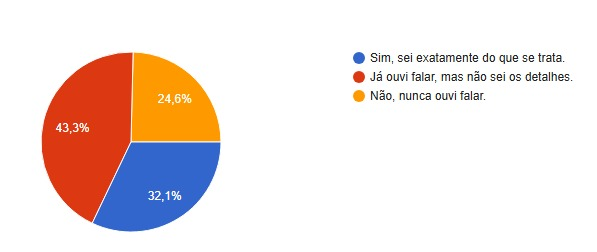
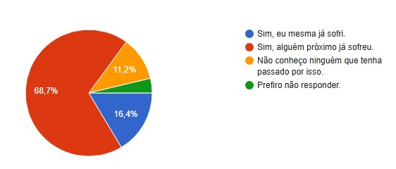
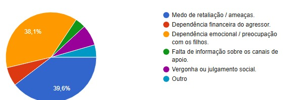

Retornar
Você já ouviu falar sobre a campanha "Agosto Lilás"?

Você ou alguma mulher do seu convívio próximo (família, amigas, vizinhas) já sofreu algum tipo de violência?

Na sua opinião, qual é a principal barreira para que as mulheres denunciem seus agressores?
